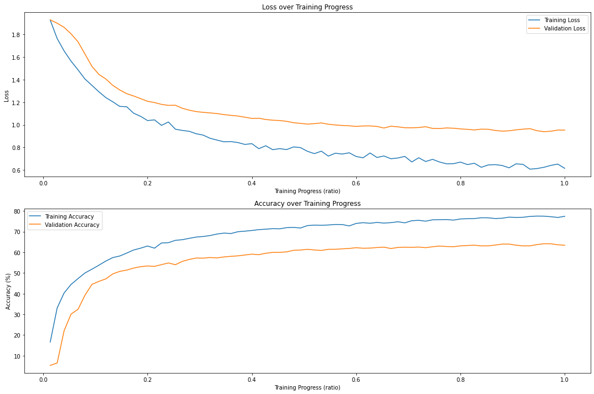
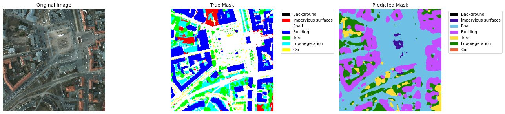
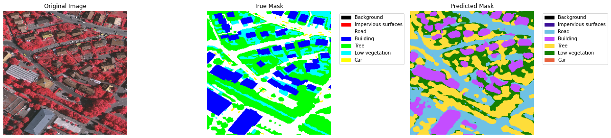
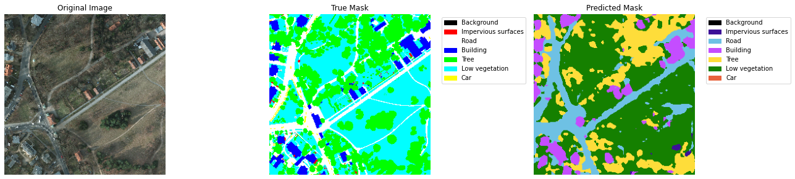

...: print(f'Loss: {test_loss:.4f}')
...: print(f'Accuracy: {test_acc:.2f}%')
...: print(f'Precision: {test_prec:.2f}%')
...: print(f'Recall: {test_rec:.2f}%')
...: print(f'F1 Score: {test_f1:.2f}%')
...: print(f'IoU: {test_iou:.2f}%')
...:
...: return test_loss, test_acc, test_prec, test_rec, test_f1, test_iou
...:
...: test_metrics = test_model(model, test_loader)
...:
...: # Visualization function
...: def class_to_rgb(mask, color_map):
...: rgb = np.zeros((*mask.shape, 3), dtype=np.uint8)
...: for i, color in enumerate(color_map):
...: rgb[mask == i] = color
...: return rgb
...:
...: def visualize_predictions(model, loader, num_images=5):
...: model.eval()
...: images_processed = 0
...: with torch.no_grad():
...: for images, masks in loader:
...: if images_processed >= num_images:
...: break
...: images, masks = images.to(device), masks.to(device)
...: outputs, _ = model(images)
...: _, predicted = torch.max(outputs, 1)
...:
...: for i in range(images.size(0)):
...: if images_processed >= num_images:
...: break
...:
...: plt.figure(figsize=(18, 6))
...:
...: # Original Image
...: ax1 = plt.subplot(1, 3, 1)
...: ax1.imshow(images[i].cpu().permute(1, 2, 0))
...: ax1.set_title('Original Image')
...: ax1.axis('off')
...:
...: # True Mask
...: ax2 = plt.subplot(1, 3, 2)
...: true_color_mask = class_to_rgb(masks[i].cpu().numpy(), color_rgb)
...: ax2.imshow(true_color_mask)
...: ax2.set_title('True Mask')
...: ax2.axis('off')
...:
...: # Predicted Mask
...: ax3 = plt.subplot(1, 3, 3)
...: pred_color_mask = class_to_rgb(predicted[i].cpu().numpy(), pred_color_rgb)
...: ax3.imshow(pred_color_mask)
...: ax3.set_title('Predicted Mask')
...: ax3.axis('off')
...:
...: # Add legends to the True Mask and Predicted Mask plots
...: true_legend_handles = [mpatches.Patch(color=np.array(color_rgb[idx])/255, label=seg_classes[idx]) for idx in range(num_classes)]
...: pred_legend_handles = [mpatches.Patch(color=np.array(pred_color_rgb[idx])/255, label=seg_classes[idx]) for idx in range(num_classes)]
...:
...: ax2.legend(handles=true_legend_handles, bbox_to_anchor=(1.05, 1), loc='upper left', fontsize=10)
...: ax3.legend(handles=pred_legend_handles, bbox_to_anchor=(1.05, 1), loc='upper left', fontsize=10)
...:
...: plt.tight_layout()
...: plt.show()
...:
...: images_processed += 1
...:
...: # Call the function to visualize predictions
...: visualize_predictions(model, test_loader, num_images=5)
| iter | target | lr | weight... |
-------------------------------------------------
Downloading: "https://download.pytorch.org/models/resnet50-19c8e357.pth" to C:\Users\ce841228/.cache\torch\hub\checkpoints\resnet50-19c8e357.pth
100%|██████████| 97.8M/97.8M [00:00<00:00, 118MB/s]
Epoch 1:
Train - Loss: 1.7140, Acc: 32.66%, Prec: 33.13%, Rec: 32.66%, F1: 30.70%, IoU: 18.65%
Val - Loss: 1.8998, Acc: 30.00%, Prec: 22.59%, Rec: 30.00%, F1: 22.98%, IoU: 13.96%
Epoch 2:
Train - Loss: 1.4473, Acc: 45.06%, Prec: 43.15%, Rec: 45.06%, F1: 43.74%, IoU: 28.47%
Val - Loss: 1.8279, Acc: 28.54%, Prec: 57.16%, Rec: 28.54%, F1: 16.02%, IoU: 9.82%
Epoch 3:
Train - Loss: 1.2956, Acc: 51.24%, Prec: 49.25%, Rec: 51.24%, F1: 49.77%, IoU: 33.76%
Val - Loss: 1.7337, Acc: 33.95%, Prec: 42.87%, Rec: 33.95%, F1: 24.75%, IoU: 15.13%
Epoch 4:
Train - Loss: 1.1890, Acc: 54.23%, Prec: 51.96%, Rec: 54.23%, F1: 52.87%, IoU: 36.71%
Val - Loss: 1.5940, Acc: 38.08%, Prec: 45.71%, Rec: 38.08%, F1: 34.08%, IoU: 21.29%
Epoch 5:
Train - Loss: 1.1258, Acc: 57.65%, Prec: 55.15%, Rec: 57.65%, F1: 56.16%, IoU: 39.92%
Val - Loss: 1.4249, Acc: 45.49%, Prec: 47.04%, Rec: 45.49%, F1: 41.66%, IoU: 27.15%
Epoch 6:
Train - Loss: 1.0244, Acc: 60.63%, Prec: 60.38%, Rec: 60.63%, F1: 59.11%, IoU: 42.91%
Val - Loss: 1.2618, Acc: 53.10%, Prec: 53.66%, Rec: 53.10%, F1: 51.22%, IoU: 35.12%
Epoch 7:
Train - Loss: 0.9992, Acc: 62.65%, Prec: 61.66%, Rec: 62.65%, F1: 61.32%, IoU: 45.19%
Val - Loss: 1.1353, Acc: 57.05%, Prec: 54.34%, Rec: 57.05%, F1: 55.47%, IoU: 39.22%
Epoch 8:
Train - Loss: 0.9474, Acc: 64.05%, Prec: 63.10%, Rec: 64.05%, F1: 62.99%, IoU: 46.83%
Val - Loss: 1.0778, Acc: 58.32%, Prec: 55.56%, Rec: 58.32%, F1: 56.62%, IoU: 40.43%
Epoch 9:
Train - Loss: 0.9149, Acc: 65.89%, Prec: 64.68%, Rec: 65.89%, F1: 64.94%, IoU: 48.92%
Val - Loss: 1.0274, Acc: 60.41%, Prec: 58.53%, Rec: 60.41%, F1: 58.37%, IoU: 42.33%
Epoch 10:
Train - Loss: 0.8835, Acc: 67.10%, Prec: 65.79%, Rec: 67.10%, F1: 66.13%, IoU: 50.27%
Val - Loss: 1.0312, Acc: 59.10%, Prec: 62.27%, Rec: 59.10%, F1: 57.59%, IoU: 41.28%
Final Epoch Results:
Train - Loss: 0.8835, Acc: 67.10%, Prec: 65.79%, Rec: 67.10%, F1: 66.13%, IoU: 50.27%
Val - Loss: 1.0312, Acc: 59.10%, Prec: 62.27%, Rec: 59.10%, F1: 57.59%, IoU: 41.28%
| 1 | 60.41 | 0.0004229 | 0.0007231 |
Epoch 1:
Train - Loss: 2.0298, Acc: 9.03%, Prec: 22.97%, Rec: 9.03%, F1: 11.54%, IoU: 6.16%
Val - Loss: 1.9402, Acc: 27.22%, Prec: 7.47%, Rec: 27.22%, F1: 11.72%, IoU: 7.46%
Epoch 2:
Train - Loss: 2.0053, Acc: 10.39%, Prec: 25.30%, Rec: 10.39%, F1: 13.19%, IoU: 7.10%
Val - Loss: 1.9363, Acc: 18.45%, Prec: 14.25%, Rec: 18.45%, F1: 14.91%, IoU: 9.06%
Epoch 3:
Train - Loss: 1.9845, Acc: 11.47%, Prec: 26.92%, Rec: 11.47%, F1: 14.55%, IoU: 7.90%
Val - Loss: 1.9336, Acc: 15.93%, Prec: 14.58%, Rec: 15.93%, F1: 14.90%, IoU: 8.81%
Epoch 4:
Train - Loss: 1.9601, Acc: 13.61%, Prec: 30.14%, Rec: 13.61%, F1: 17.25%, IoU: 9.49%
Val - Loss: 1.9293, Acc: 16.81%, Prec: 22.92%, Rec: 16.81%, F1: 15.59%, IoU: 9.27%
Epoch 5:
Train - Loss: 1.9445, Acc: 15.40%, Prec: 32.04%, Rec: 15.40%, F1: 19.29%, IoU: 10.74%
Val - Loss: 1.9265, Acc: 17.20%, Prec: 45.30%, Rec: 17.20%, F1: 16.51%, IoU: 9.81%
Epoch 6:
Train - Loss: 1.9232, Acc: 17.59%, Prec: 33.78%, Rec: 17.59%, F1: 21.73%, IoU: 12.26%
Val - Loss: 1.9299, Acc: 15.87%, Prec: 33.34%, Rec: 15.87%, F1: 16.16%, IoU: 9.60%
Epoch 7:
Train - Loss: 1.9002, Acc: 19.62%, Prec: 35.53%, Rec: 19.62%, F1: 23.98%, IoU: 13.70%
Val - Loss: 1.9279, Acc: 17.20%, Prec: 34.32%, Rec: 17.20%, F1: 18.07%, IoU: 10.65%
Epoch 8:
Train - Loss: 1.8926, Acc: 20.88%, Prec: 36.46%, Rec: 20.88%, F1: 25.26%, IoU: 14.52%
Val - Loss: 1.9161, Acc: 20.36%, Prec: 35.07%, Rec: 20.36%, F1: 21.84%, IoU: 12.86%
Epoch 9:
Train - Loss: 1.8817, Acc: 22.33%, Prec: 36.87%, Rec: 22.33%, F1: 26.69%, IoU: 15.49%
Val - Loss: 1.9106, Acc: 21.11%, Prec: 36.03%, Rec: 21.11%, F1: 23.01%, IoU: 13.61%
Epoch 10:
Train - Loss: 1.8625, Acc: 25.08%, Prec: 38.25%, Rec: 25.08%, F1: 29.33%, IoU: 17.28%
Val - Loss: 1.9029, Acc: 22.43%, Prec: 36.26%, Rec: 22.43%, F1: 24.03%, IoU: 14.28%
Final Epoch Results:
Train - Loss: 1.8625, Acc: 25.08%, Prec: 38.25%, Rec: 25.08%, F1: 29.33%, IoU: 17.28%
Val - Loss: 1.9029, Acc: 22.43%, Prec: 36.26%, Rec: 22.43%, F1: 24.03%, IoU: 14.28%
| 2 | 27.22 | 1.011e-05 | 0.0003093 |
Epoch 1:
Train - Loss: 1.8615, Acc: 25.41%, Prec: 34.51%, Rec: 25.41%, F1: 27.41%, IoU: 16.19%
Val - Loss: 1.9415, Acc: 14.24%, Prec: 4.52%, Rec: 14.24%, F1: 6.86%, IoU: 4.07%
Epoch 2:
Train - Loss: 1.5521, Acc: 42.22%, Prec: 42.01%, Rec: 42.22%, F1: 41.23%, IoU: 26.35%
Val - Loss: 1.8825, Acc: 26.26%, Prec: 46.69%, Rec: 26.26%, F1: 16.87%, IoU: 10.17%
Epoch 3:
Train - Loss: 1.3612, Acc: 49.74%, Prec: 47.77%, Rec: 49.74%, F1: 48.48%, IoU: 32.56%
Val - Loss: 1.7960, Acc: 25.97%, Prec: 50.22%, Rec: 25.97%, F1: 16.70%, IoU: 9.56%
Epoch 4:
Train - Loss: 1.2123, Acc: 53.71%, Prec: 51.41%, Rec: 53.71%, F1: 52.07%, IoU: 35.97%
Val - Loss: 1.6119, Acc: 37.55%, Prec: 45.78%, Rec: 37.55%, F1: 33.72%, IoU: 20.85%
Epoch 5:
Train - Loss: 1.1244, Acc: 57.91%, Prec: 55.70%, Rec: 57.91%, F1: 56.33%, IoU: 40.08%
Val - Loss: 1.4381, Acc: 49.65%, Prec: 50.06%, Rec: 49.65%, F1: 48.29%, IoU: 32.38%
Epoch 6:
Train - Loss: 1.0599, Acc: 60.14%, Prec: 57.57%, Rec: 60.14%, F1: 58.58%, IoU: 42.43%
Val - Loss: 1.3039, Acc: 51.82%, Prec: 50.72%, Rec: 51.82%, F1: 50.67%, IoU: 34.52%
Epoch 7:
Train - Loss: 1.0116, Acc: 62.66%, Prec: 61.82%, Rec: 62.66%, F1: 61.24%, IoU: 45.14%
Val - Loss: 1.1665, Acc: 56.42%, Prec: 54.52%, Rec: 56.42%, F1: 55.13%, IoU: 38.86%
Epoch 8:
Train - Loss: 0.9396, Acc: 64.73%, Prec: 63.50%, Rec: 64.73%, F1: 63.64%, IoU: 47.55%
Val - Loss: 1.1206, Acc: 57.57%, Prec: 56.66%, Rec: 57.57%, F1: 56.47%, IoU: 40.22%
Epoch 9:
Train - Loss: 0.9652, Acc: 65.23%, Prec: 64.10%, Rec: 65.23%, F1: 64.15%, IoU: 48.11%
Val - Loss: 1.0520, Acc: 59.30%, Prec: 59.35%, Rec: 59.30%, F1: 57.95%, IoU: 41.70%
Epoch 10:
Train - Loss: 0.9302, Acc: 66.21%, Prec: 64.79%, Rec: 66.21%, F1: 65.31%, IoU: 49.43%
Val - Loss: 1.0274, Acc: 60.34%, Prec: 57.46%, Rec: 60.34%, F1: 58.57%, IoU: 42.44%
Final Epoch Results:
Train - Loss: 0.9302, Acc: 66.21%, Prec: 64.79%, Rec: 66.21%, F1: 65.31%, IoU: 49.43%
Val - Loss: 1.0274, Acc: 60.34%, Prec: 57.46%, Rec: 60.34%, F1: 58.57%, IoU: 42.44%
| 3 | 60.34 | 0.0004343 | 0.0007167 |
Epoch 1:
Train - Loss: 1.8390, Acc: 28.11%, Prec: 37.82%, Rec: 28.11%, F1: 30.69%, IoU: 18.52%
Val - Loss: 1.8963, Acc: 31.22%, Prec: 23.86%, Rec: 31.22%, F1: 20.06%, IoU: 12.62%
Epoch 2:
Train - Loss: 1.3583, Acc: 48.91%, Prec: 46.97%, Rec: 48.91%, F1: 47.58%, IoU: 31.80%
Val - Loss: 1.8778, Acc: 25.24%, Prec: 32.93%, Rec: 25.24%, F1: 16.54%, IoU: 9.91%
Epoch 3:
Train - Loss: 1.1828, Acc: 54.51%, Prec: 52.32%, Rec: 54.51%, F1: 53.20%, IoU: 37.01%
Val - Loss: 4.3208, Acc: 27.48%, Prec: 15.14%, Rec: 27.48%, F1: 12.26%, IoU: 7.74%
Epoch 4:
Train - Loss: 1.0723, Acc: 58.66%, Prec: 56.46%, Rec: 58.66%, F1: 57.22%, IoU: 40.99%
Val - Loss: 1.5557, Acc: 40.24%, Prec: 54.56%, Rec: 40.24%, F1: 33.73%, IoU: 21.22%
Epoch 5:
Train - Loss: 1.0264, Acc: 61.20%, Prec: 60.01%, Rec: 61.20%, F1: 59.67%, IoU: 43.56%
Val - Loss: 1.3554, Acc: 49.54%, Prec: 54.49%, Rec: 49.54%, F1: 45.92%, IoU: 30.79%
Epoch 6:
Train - Loss: 0.9499, Acc: 63.46%, Prec: 62.77%, Rec: 63.46%, F1: 62.42%, IoU: 46.52%
Val - Loss: 1.2176, Acc: 53.47%, Prec: 59.00%, Rec: 53.47%, F1: 52.15%, IoU: 35.91%
Epoch 7:
Train - Loss: 0.9353, Acc: 65.06%, Prec: 63.71%, Rec: 65.06%, F1: 63.88%, IoU: 47.94%
Val - Loss: 1.0569, Acc: 59.80%, Prec: 63.08%, Rec: 59.80%, F1: 57.90%, IoU: 41.80%
Epoch 8:
Train - Loss: 0.9075, Acc: 66.67%, Prec: 65.19%, Rec: 66.67%, F1: 65.54%, IoU: 49.98%
Val - Loss: 1.0721, Acc: 59.80%, Prec: 60.08%, Rec: 59.80%, F1: 57.90%, IoU: 41.74%
Epoch 9:
Train - Loss: 0.8384, Acc: 68.05%, Prec: 66.84%, Rec: 68.05%, F1: 66.98%, IoU: 51.49%
Val - Loss: 1.0760, Acc: 58.82%, Prec: 62.50%, Rec: 58.82%, F1: 57.37%, IoU: 41.11%
Epoch 10:
Train - Loss: 0.8629, Acc: 68.54%, Prec: 67.20%, Rec: 68.54%, F1: 67.48%, IoU: 52.01%
Val - Loss: 1.0325, Acc: 61.25%, Prec: 62.96%, Rec: 61.25%, F1: 59.72%, IoU: 43.34%
Final Epoch Results:
Train - Loss: 0.8629, Acc: 68.54%, Prec: 67.20%, Rec: 68.54%, F1: 67.48%, IoU: 52.01%
Val - Loss: 1.0325, Acc: 61.25%, Prec: 62.96%, Rec: 61.25%, F1: 59.72%, IoU: 43.34%
| 4 | 61.25 | 0.0008533 | 0.001 |
Epoch 1:
Train - Loss: 1.7170, Acc: 31.06%, Prec: 35.09%, Rec: 31.06%, F1: 32.33%, IoU: 19.45%
Val - Loss: 1.9188, Acc: 29.25%, Prec: 30.06%, Rec: 29.25%, F1: 22.03%, IoU: 13.32%
Epoch 2:
Train - Loss: 1.2682, Acc: 51.48%, Prec: 49.39%, Rec: 51.48%, F1: 50.28%, IoU: 34.23%
Val - Loss: 1.8489, Acc: 27.34%, Prec: 15.73%, Rec: 27.34%, F1: 11.91%, IoU: 7.56%
Epoch 3:
Train - Loss: 1.0973, Acc: 56.97%, Prec: 54.86%, Rec: 56.97%, F1: 55.32%, IoU: 39.09%
Val - Loss: 1.9177, Acc: 30.46%, Prec: 59.51%, Rec: 30.46%, F1: 18.33%, IoU: 11.04%
Epoch 4:
Train - Loss: 0.9990, Acc: 60.37%, Prec: 58.12%, Rec: 60.37%, F1: 58.86%, IoU: 42.69%
Val - Loss: 1.4479, Acc: 44.28%, Prec: 49.82%, Rec: 44.28%, F1: 40.33%, IoU: 26.16%
Epoch 5:
Train - Loss: 0.9376, Acc: 63.14%, Prec: 62.81%, Rec: 63.14%, F1: 61.83%, IoU: 45.85%
Val - Loss: 1.5634, Acc: 44.63%, Prec: 56.15%, Rec: 44.63%, F1: 42.16%, IoU: 27.20%
Epoch 6:
Train - Loss: 0.9166, Acc: 65.01%, Prec: 64.39%, Rec: 65.01%, F1: 63.89%, IoU: 47.92%
Val - Loss: 1.1727, Acc: 54.31%, Prec: 59.76%, Rec: 54.31%, F1: 52.92%, IoU: 36.69%
Epoch 7:
Train - Loss: 0.8875, Acc: 66.13%, Prec: 64.76%, Rec: 66.13%, F1: 65.20%, IoU: 49.36%
Val - Loss: 1.0196, Acc: 60.65%, Prec: 62.18%, Rec: 60.65%, F1: 59.47%, IoU: 43.07%
Epoch 8:
Train - Loss: 0.8462, Acc: 67.92%, Prec: 67.02%, Rec: 67.92%, F1: 67.00%, IoU: 51.52%
Val - Loss: 0.9886, Acc: 61.67%, Prec: 63.29%, Rec: 61.67%, F1: 59.91%, IoU: 43.93%
Epoch 9:
Train - Loss: 0.8374, Acc: 67.96%, Prec: 66.82%, Rec: 67.96%, F1: 67.04%, IoU: 51.51%
Val - Loss: 1.0192, Acc: 60.14%, Prec: 62.16%, Rec: 60.14%, F1: 59.35%, IoU: 42.72%
Epoch 10:
Train - Loss: 0.8791, Acc: 68.86%, Prec: 67.83%, Rec: 68.86%, F1: 68.03%, IoU: 52.59%
Val - Loss: 1.0518, Acc: 59.77%, Prec: 60.74%, Rec: 59.77%, F1: 58.32%, IoU: 41.74%
Final Epoch Results:
Train - Loss: 0.8791, Acc: 68.86%, Prec: 67.83%, Rec: 68.86%, F1: 68.03%, IoU: 52.59%
Val - Loss: 1.0518, Acc: 59.77%, Prec: 60.74%, Rec: 59.77%, F1: 58.32%, IoU: 41.74%
| 5 | 61.67 | 0.001 | 1e-05 |
=================================================
Best hyperparameters found: {'lr': 0.001, 'weight_decay': 1e-05}
Epoch 1:
Train - Loss: 1.9275, Acc: 16.60%, Prec: 28.72%, Rec: 16.60%, F1: 19.89%, IoU: 11.09%
Val - Loss: 1.9293, Acc: 5.31%, Prec: 6.29%, Rec: 5.31%, F1: 3.68%, IoU: 1.99%
Epoch 2:
Train - Loss: 1.7638, Acc: 33.12%, Prec: 39.33%, Rec: 33.12%, F1: 35.19%, IoU: 21.52%
Val - Loss: 1.8995, Acc: 6.47%, Prec: 23.43%, Rec: 6.47%, F1: 4.95%, IoU: 2.73%
Epoch 3:
Train - Loss: 1.6539, Acc: 40.37%, Prec: 42.62%, Rec: 40.37%, F1: 41.03%, IoU: 26.05%
Val - Loss: 1.8630, Acc: 22.11%, Prec: 54.44%, Rec: 22.11%, F1: 23.56%, IoU: 14.25%
Epoch 4:
Train - Loss: 1.5633, Acc: 44.48%, Prec: 44.70%, Rec: 44.48%, F1: 44.26%, IoU: 28.73%
Val - Loss: 1.8053, Acc: 30.14%, Prec: 39.49%, Rec: 30.14%, F1: 27.51%, IoU: 16.91%
Epoch 5:
Train - Loss: 1.4865, Acc: 47.32%, Prec: 46.72%, Rec: 47.32%, F1: 46.70%, IoU: 30.79%
Val - Loss: 1.7349, Acc: 32.45%, Prec: 39.43%, Rec: 32.45%, F1: 27.98%, IoU: 17.16%
Epoch 6:
Train - Loss: 1.4055, Acc: 50.02%, Prec: 49.32%, Rec: 50.02%, F1: 49.15%, IoU: 32.97%
Val - Loss: 1.6264, Acc: 39.27%, Prec: 41.68%, Rec: 39.27%, F1: 36.72%, IoU: 23.07%
Epoch 7:
Train - Loss: 1.3493, Acc: 51.86%, Prec: 51.32%, Rec: 51.86%, F1: 50.86%, IoU: 34.55%
Val - Loss: 1.5174, Acc: 44.50%, Prec: 43.74%, Rec: 44.50%, F1: 42.96%, IoU: 27.88%
Epoch 8:
Train - Loss: 1.2925, Acc: 53.77%, Prec: 53.28%, Rec: 53.77%, F1: 52.79%, IoU: 36.34%
Val - Loss: 1.4465, Acc: 45.95%, Prec: 45.64%, Rec: 45.95%, F1: 43.95%, IoU: 28.75%
Epoch 9:
Train - Loss: 1.2410, Acc: 55.80%, Prec: 55.27%, Rec: 55.80%, F1: 54.77%, IoU: 38.23%
Val - Loss: 1.4059, Acc: 47.17%, Prec: 47.11%, Rec: 47.17%, F1: 45.32%, IoU: 29.88%
Epoch 10:
Train - Loss: 1.2038, Acc: 57.47%, Prec: 56.72%, Rec: 57.47%, F1: 56.46%, IoU: 39.86%
Val - Loss: 1.3494, Acc: 49.57%, Prec: 48.13%, Rec: 49.57%, F1: 48.02%, IoU: 32.19%
Epoch 11:
Train - Loss: 1.1632, Acc: 58.23%, Prec: 57.40%, Rec: 58.23%, F1: 57.14%, IoU: 40.60%
Val - Loss: 1.3089, Acc: 50.79%, Prec: 49.41%, Rec: 50.79%, F1: 49.30%, IoU: 33.31%
Epoch 12:
Train - Loss: 1.1601, Acc: 59.65%, Prec: 58.92%, Rec: 59.65%, F1: 58.56%, IoU: 42.03%
Val - Loss: 1.2760, Acc: 51.42%, Prec: 50.02%, Rec: 51.42%, F1: 49.95%, IoU: 33.88%
Epoch 13:
Train - Loss: 1.1029, Acc: 61.15%, Prec: 60.22%, Rec: 61.15%, F1: 60.14%, IoU: 43.60%
Val - Loss: 1.2554, Acc: 52.39%, Prec: 50.44%, Rec: 52.39%, F1: 51.06%, IoU: 34.89%
Epoch 14:
Train - Loss: 1.0753, Acc: 62.02%, Prec: 61.14%, Rec: 62.02%, F1: 60.98%, IoU: 44.54%
Val - Loss: 1.2319, Acc: 53.07%, Prec: 51.26%, Rec: 53.07%, F1: 51.77%, IoU: 35.54%
Epoch 15:
Train - Loss: 1.0379, Acc: 63.07%, Prec: 61.94%, Rec: 63.07%, F1: 62.06%, IoU: 45.68%
Val - Loss: 1.2085, Acc: 53.42%, Prec: 52.26%, Rec: 53.42%, F1: 51.92%, IoU: 35.71%
Epoch 16:
Train - Loss: 1.0440, Acc: 62.02%, Prec: 61.06%, Rec: 62.02%, F1: 61.01%, IoU: 44.56%
Val - Loss: 1.1970, Acc: 53.22%, Prec: 52.18%, Rec: 53.22%, F1: 51.70%, IoU: 35.51%
Epoch 17:
Train - Loss: 0.9952, Acc: 64.53%, Prec: 63.33%, Rec: 64.53%, F1: 63.51%, IoU: 47.28%
Val - Loss: 1.1812, Acc: 54.05%, Prec: 53.05%, Rec: 54.05%, F1: 52.70%, IoU: 36.44%
Epoch 18:
Train - Loss: 1.0252, Acc: 64.67%, Prec: 63.45%, Rec: 64.67%, F1: 63.74%, IoU: 47.55%
Val - Loss: 1.1722, Acc: 54.87%, Prec: 52.54%, Rec: 54.87%, F1: 53.44%, IoU: 37.18%
Epoch 19:
Train - Loss: 0.9613, Acc: 65.81%, Prec: 64.46%, Rec: 65.81%, F1: 64.88%, IoU: 48.81%
Val - Loss: 1.1736, Acc: 54.02%, Prec: 52.86%, Rec: 54.02%, F1: 52.93%, IoU: 36.67%
Epoch 20:
Train - Loss: 0.9505, Acc: 66.13%, Prec: 64.80%, Rec: 66.13%, F1: 65.15%, IoU: 49.13%
Val - Loss: 1.1467, Acc: 55.63%, Prec: 54.02%, Rec: 55.63%, F1: 54.21%, IoU: 37.94%
Epoch 21:
Train - Loss: 0.9428, Acc: 66.78%, Prec: 65.44%, Rec: 66.78%, F1: 65.82%, IoU: 49.90%
Val - Loss: 1.1297, Acc: 56.58%, Prec: 54.69%, Rec: 56.58%, F1: 55.08%, IoU: 38.80%
Epoch 22:
Train - Loss: 0.9210, Acc: 67.40%, Prec: 66.11%, Rec: 67.40%, F1: 66.41%, IoU: 50.59%
Val - Loss: 1.1173, Acc: 57.26%, Prec: 54.58%, Rec: 57.26%, F1: 55.70%, IoU: 39.42%
Epoch 23:
Train - Loss: 0.9091, Acc: 67.67%, Prec: 66.32%, Rec: 67.67%, F1: 66.72%, IoU: 50.94%
Val - Loss: 1.1105, Acc: 57.19%, Prec: 54.44%, Rec: 57.19%, F1: 55.76%, IoU: 39.51%
Epoch 24:
Train - Loss: 0.8808, Acc: 68.14%, Prec: 66.72%, Rec: 68.14%, F1: 67.24%, IoU: 51.53%
Val - Loss: 1.1056, Acc: 57.51%, Prec: 55.03%, Rec: 57.51%, F1: 55.97%, IoU: 39.72%
Epoch 25:
Train - Loss: 0.8650, Acc: 68.87%, Prec: 67.52%, Rec: 68.87%, F1: 67.91%, IoU: 52.30%
Val - Loss: 1.0997, Acc: 57.32%, Prec: 55.31%, Rec: 57.32%, F1: 56.05%, IoU: 39.78%
Epoch 26:
Train - Loss: 0.8497, Acc: 69.32%, Prec: 67.98%, Rec: 69.32%, F1: 68.40%, IoU: 52.91%
Val - Loss: 1.0903, Acc: 57.79%, Prec: 55.96%, Rec: 57.79%, F1: 56.52%, IoU: 40.22%
Epoch 27:
Train - Loss: 0.8518, Acc: 69.12%, Prec: 67.83%, Rec: 69.12%, F1: 68.20%, IoU: 52.67%
Val - Loss: 1.0841, Acc: 58.08%, Prec: 56.26%, Rec: 58.08%, F1: 56.60%, IoU: 40.33%
Epoch 28:
Train - Loss: 0.8430, Acc: 69.99%, Prec: 68.62%, Rec: 69.99%, F1: 69.04%, IoU: 53.68%
Val - Loss: 1.0781, Acc: 58.31%, Prec: 56.14%, Rec: 58.31%, F1: 56.74%, IoU: 40.48%
Epoch 29:
Train - Loss: 0.8265, Acc: 70.26%, Prec: 68.89%, Rec: 70.26%, F1: 69.37%, IoU: 54.05%
Val - Loss: 1.0677, Acc: 58.73%, Prec: 57.39%, Rec: 58.73%, F1: 57.10%, IoU: 40.86%
Epoch 30:
Train - Loss: 0.8335, Acc: 70.58%, Prec: 69.16%, Rec: 70.58%, F1: 69.66%, IoU: 54.42%
Val - Loss: 1.0568, Acc: 59.12%, Prec: 59.04%, Rec: 59.12%, F1: 57.63%, IoU: 41.35%
Epoch 31:
Train - Loss: 0.7889, Acc: 70.99%, Prec: 69.62%, Rec: 70.99%, F1: 70.11%, IoU: 54.98%
Val - Loss: 1.0584, Acc: 58.89%, Prec: 58.91%, Rec: 58.89%, F1: 57.50%, IoU: 41.18%
Epoch 32:
Train - Loss: 0.8149, Acc: 71.22%, Prec: 69.91%, Rec: 71.22%, F1: 70.31%, IoU: 55.19%
Val - Loss: 1.0473, Acc: 59.55%, Prec: 58.10%, Rec: 59.55%, F1: 57.84%, IoU: 41.64%
Epoch 33:
Train - Loss: 0.7800, Acc: 71.46%, Prec: 71.66%, Rec: 71.46%, F1: 70.55%, IoU: 55.47%
Val - Loss: 1.0411, Acc: 59.98%, Prec: 59.18%, Rec: 59.98%, F1: 58.36%, IoU: 42.15%
Epoch 34:
Train - Loss: 0.7892, Acc: 71.39%, Prec: 70.01%, Rec: 71.39%, F1: 70.54%, IoU: 55.50%
Val - Loss: 1.0381, Acc: 60.00%, Prec: 58.66%, Rec: 60.00%, F1: 58.44%, IoU: 42.25%
Epoch 35:
Train - Loss: 0.7811, Acc: 71.95%, Prec: 70.58%, Rec: 71.95%, F1: 71.07%, IoU: 56.13%
Val - Loss: 1.0311, Acc: 60.22%, Prec: 58.39%, Rec: 60.22%, F1: 58.50%, IoU: 42.34%
Epoch 36:
Train - Loss: 0.8046, Acc: 72.07%, Prec: 70.71%, Rec: 72.07%, F1: 71.14%, IoU: 56.27%
Val - Loss: 1.0187, Acc: 60.99%, Prec: 61.54%, Rec: 60.99%, F1: 59.26%, IoU: 43.14%
Epoch 37:
Train - Loss: 0.7984, Acc: 71.78%, Prec: 70.45%, Rec: 71.78%, F1: 70.93%, IoU: 56.01%
Val - Loss: 1.0127, Acc: 61.13%, Prec: 61.02%, Rec: 61.13%, F1: 59.65%, IoU: 43.34%
Epoch 38:
Train - Loss: 0.7656, Acc: 72.96%, Prec: 73.17%, Rec: 72.96%, F1: 72.14%, IoU: 57.47%
Val - Loss: 1.0064, Acc: 61.48%, Prec: 61.83%, Rec: 61.48%, F1: 60.06%, IoU: 43.74%
Epoch 39:
Train - Loss: 0.7451, Acc: 73.18%, Prec: 73.43%, Rec: 73.18%, F1: 72.37%, IoU: 57.73%
Val - Loss: 1.0107, Acc: 61.15%, Prec: 61.23%, Rec: 61.15%, F1: 59.83%, IoU: 43.54%
Epoch 40:
Train - Loss: 0.7669, Acc: 73.10%, Prec: 71.73%, Rec: 73.10%, F1: 72.28%, IoU: 57.68%
Val - Loss: 1.0167, Acc: 60.93%, Prec: 58.78%, Rec: 60.93%, F1: 59.34%, IoU: 43.20%
Epoch 41:
Train - Loss: 0.7232, Acc: 73.24%, Prec: 71.92%, Rec: 73.24%, F1: 72.42%, IoU: 57.82%
Val - Loss: 1.0055, Acc: 61.47%, Prec: 59.63%, Rec: 61.47%, F1: 59.79%, IoU: 43.70%
Epoch 42:
Train - Loss: 0.7487, Acc: 73.49%, Prec: 73.71%, Rec: 73.49%, F1: 72.67%, IoU: 58.11%
Val - Loss: 0.9989, Acc: 61.49%, Prec: 62.48%, Rec: 61.49%, F1: 59.94%, IoU: 43.84%
Epoch 43:
Train - Loss: 0.7414, Acc: 73.46%, Prec: 73.20%, Rec: 73.46%, F1: 72.64%, IoU: 58.10%
Val - Loss: 0.9944, Acc: 61.70%, Prec: 62.35%, Rec: 61.70%, F1: 60.25%, IoU: 44.06%
Epoch 44:
Train - Loss: 0.7525, Acc: 72.79%, Prec: 71.45%, Rec: 72.79%, F1: 71.97%, IoU: 57.26%
Val - Loss: 0.9918, Acc: 61.89%, Prec: 60.96%, Rec: 61.89%, F1: 60.41%, IoU: 44.22%
Epoch 45:
Train - Loss: 0.7197, Acc: 74.00%, Prec: 73.91%, Rec: 74.00%, F1: 73.18%, IoU: 58.77%
Val - Loss: 0.9858, Acc: 62.25%, Prec: 61.68%, Rec: 62.25%, F1: 60.60%, IoU: 44.55%
Epoch 46:
Train - Loss: 0.7083, Acc: 74.36%, Prec: 73.98%, Rec: 74.36%, F1: 73.52%, IoU: 59.20%
Val - Loss: 0.9902, Acc: 61.99%, Prec: 61.16%, Rec: 61.99%, F1: 60.32%, IoU: 44.29%
Epoch 47:
Train - Loss: 0.7507, Acc: 74.07%, Prec: 73.81%, Rec: 74.07%, F1: 73.23%, IoU: 58.85%
Val - Loss: 0.9906, Acc: 62.06%, Prec: 61.33%, Rec: 62.06%, F1: 60.43%, IoU: 44.41%
Epoch 48:
Train - Loss: 0.7111, Acc: 74.48%, Prec: 73.91%, Rec: 74.48%, F1: 73.62%, IoU: 59.34%
Val - Loss: 0.9858, Acc: 62.33%, Prec: 62.92%, Rec: 62.33%, F1: 60.70%, IoU: 44.72%
Epoch 49:
Train - Loss: 0.7243, Acc: 74.16%, Prec: 72.83%, Rec: 74.16%, F1: 73.38%, IoU: 59.03%
Val - Loss: 0.9718, Acc: 62.53%, Prec: 63.15%, Rec: 62.53%, F1: 61.06%, IoU: 45.02%
Epoch 50:
Train - Loss: 0.6998, Acc: 74.37%, Prec: 74.20%, Rec: 74.37%, F1: 73.50%, IoU: 59.18%
Val - Loss: 0.9878, Acc: 61.85%, Prec: 62.23%, Rec: 61.85%, F1: 60.16%, IoU: 44.08%
Epoch 51:
Train - Loss: 0.7066, Acc: 74.80%, Prec: 74.67%, Rec: 74.80%, F1: 73.93%, IoU: 59.74%
Val - Loss: 0.9823, Acc: 62.37%, Prec: 61.94%, Rec: 62.37%, F1: 60.71%, IoU: 44.66%
Epoch 52:
Train - Loss: 0.7207, Acc: 74.28%, Prec: 74.50%, Rec: 74.28%, F1: 73.47%, IoU: 59.16%
Val - Loss: 0.9745, Acc: 62.50%, Prec: 61.29%, Rec: 62.50%, F1: 60.90%, IoU: 44.91%
Epoch 53:
Train - Loss: 0.6713, Acc: 75.31%, Prec: 74.77%, Rec: 75.31%, F1: 74.49%, IoU: 60.44%
Val - Loss: 0.9738, Acc: 62.43%, Prec: 61.93%, Rec: 62.43%, F1: 60.65%, IoU: 44.70%
Epoch 54:
Train - Loss: 0.7084, Acc: 75.49%, Prec: 74.84%, Rec: 75.49%, F1: 74.68%, IoU: 60.69%
Val - Loss: 0.9762, Acc: 62.56%, Prec: 61.18%, Rec: 62.56%, F1: 60.93%, IoU: 44.94%
Epoch 55:
Train - Loss: 0.6755, Acc: 75.08%, Prec: 74.61%, Rec: 75.08%, F1: 74.27%, IoU: 60.19%
Val - Loss: 0.9833, Acc: 62.25%, Prec: 60.88%, Rec: 62.25%, F1: 60.48%, IoU: 44.52%
Epoch 56:
Train - Loss: 0.6945, Acc: 75.75%, Prec: 75.46%, Rec: 75.75%, F1: 74.89%, IoU: 60.97%
Val - Loss: 0.9682, Acc: 62.72%, Prec: 62.03%, Rec: 62.72%, F1: 61.01%, IoU: 45.06%
Epoch 57:
Train - Loss: 0.6707, Acc: 75.80%, Prec: 75.07%, Rec: 75.80%, F1: 74.96%, IoU: 61.05%
Val - Loss: 0.9670, Acc: 63.05%, Prec: 62.65%, Rec: 63.05%, F1: 61.32%, IoU: 45.39%
Epoch 58:
Train - Loss: 0.6551, Acc: 75.88%, Prec: 75.21%, Rec: 75.88%, F1: 75.09%, IoU: 61.22%
Val - Loss: 0.9725, Acc: 62.82%, Prec: 62.16%, Rec: 62.82%, F1: 61.26%, IoU: 45.27%
Epoch 59:
Train - Loss: 0.6561, Acc: 75.60%, Prec: 75.15%, Rec: 75.60%, F1: 74.80%, IoU: 60.86%
Val - Loss: 0.9701, Acc: 62.74%, Prec: 62.96%, Rec: 62.74%, F1: 61.26%, IoU: 45.25%
Epoch 60:
Train - Loss: 0.6702, Acc: 76.16%, Prec: 75.61%, Rec: 76.16%, F1: 75.30%, IoU: 61.52%
Val - Loss: 0.9638, Acc: 63.14%, Prec: 63.64%, Rec: 63.14%, F1: 61.63%, IoU: 45.64%
Epoch 61:
Train - Loss: 0.6482, Acc: 76.29%, Prec: 75.59%, Rec: 76.29%, F1: 75.49%, IoU: 61.73%
Val - Loss: 0.9602, Acc: 63.32%, Prec: 62.88%, Rec: 63.32%, F1: 61.81%, IoU: 45.79%
Epoch 62:
Train - Loss: 0.6598, Acc: 76.35%, Prec: 75.93%, Rec: 76.35%, F1: 75.56%, IoU: 61.85%
Val - Loss: 0.9547, Acc: 63.46%, Prec: 64.40%, Rec: 63.46%, F1: 61.79%, IoU: 45.87%
Epoch 63:
Train - Loss: 0.6240, Acc: 76.74%, Prec: 76.20%, Rec: 76.74%, F1: 75.95%, IoU: 62.35%
Val - Loss: 0.9617, Acc: 63.14%, Prec: 64.53%, Rec: 63.14%, F1: 61.45%, IoU: 45.51%
Epoch 64:
Train - Loss: 0.6450, Acc: 76.71%, Prec: 76.24%, Rec: 76.71%, F1: 75.91%, IoU: 62.30%
Val - Loss: 0.9608, Acc: 63.14%, Prec: 64.21%, Rec: 63.14%, F1: 61.71%, IoU: 45.65%
Epoch 65:
Train - Loss: 0.6477, Acc: 76.38%, Prec: 75.95%, Rec: 76.38%, F1: 75.58%, IoU: 61.85%
Val - Loss: 0.9502, Acc: 63.54%, Prec: 62.97%, Rec: 63.54%, F1: 62.21%, IoU: 46.15%
Epoch 66:
Train - Loss: 0.6401, Acc: 76.51%, Prec: 75.88%, Rec: 76.51%, F1: 75.69%, IoU: 62.01%
Val - Loss: 0.9443, Acc: 63.99%, Prec: 63.96%, Rec: 63.99%, F1: 62.41%, IoU: 46.53%
Epoch 67:
Train - Loss: 0.6195, Acc: 77.04%, Prec: 76.60%, Rec: 77.04%, F1: 76.22%, IoU: 62.72%
Val - Loss: 0.9473, Acc: 64.00%, Prec: 62.84%, Rec: 64.00%, F1: 62.38%, IoU: 46.54%
Epoch 68:
Train - Loss: 0.6549, Acc: 76.89%, Prec: 76.56%, Rec: 76.89%, F1: 76.06%, IoU: 62.50%
Val - Loss: 0.9557, Acc: 63.48%, Prec: 61.85%, Rec: 63.48%, F1: 61.95%, IoU: 46.04%
Epoch 69:
Train - Loss: 0.6498, Acc: 76.98%, Prec: 76.54%, Rec: 76.98%, F1: 76.19%, IoU: 62.66%
Val - Loss: 0.9617, Acc: 63.12%, Prec: 62.07%, Rec: 63.12%, F1: 61.63%, IoU: 45.74%
Epoch 70:
Train - Loss: 0.6075, Acc: 77.38%, Prec: 77.03%, Rec: 77.38%, F1: 76.62%, IoU: 63.24%
Val - Loss: 0.9662, Acc: 63.14%, Prec: 62.51%, Rec: 63.14%, F1: 61.51%, IoU: 45.57%
Epoch 71:
Train - Loss: 0.6130, Acc: 77.55%, Prec: 77.12%, Rec: 77.55%, F1: 76.79%, IoU: 63.44%
Val - Loss: 0.9483, Acc: 63.75%, Prec: 64.72%, Rec: 63.75%, F1: 62.22%, IoU: 46.23%
Epoch 72:
Train - Loss: 0.6240, Acc: 77.51%, Prec: 77.02%, Rec: 77.51%, F1: 76.74%, IoU: 63.37%
Val - Loss: 0.9395, Acc: 64.17%, Prec: 65.10%, Rec: 64.17%, F1: 62.60%, IoU: 46.72%
Epoch 73:
Train - Loss: 0.6410, Acc: 77.24%, Prec: 76.84%, Rec: 77.24%, F1: 76.44%, IoU: 63.00%
Val - Loss: 0.9432, Acc: 64.15%, Prec: 65.04%, Rec: 64.15%, F1: 62.63%, IoU: 46.73%
Epoch 74:
Train - Loss: 0.6524, Acc: 76.90%, Prec: 76.55%, Rec: 76.90%, F1: 76.12%, IoU: 62.57%
Val - Loss: 0.9538, Acc: 63.67%, Prec: 63.52%, Rec: 63.67%, F1: 62.42%, IoU: 46.38%
Epoch 75:
Train - Loss: 0.6151, Acc: 77.43%, Prec: 76.84%, Rec: 77.43%, F1: 76.67%, IoU: 63.31%
Val - Loss: 0.9533, Acc: 63.44%, Prec: 62.95%, Rec: 63.44%, F1: 62.32%, IoU: 46.22%
Final Epoch Results:
Train - Loss: 0.6151, Acc: 77.43%, Prec: 76.84%, Rec: 77.43%, F1: 76.67%, IoU: 63.31%
Val - Loss: 0.9533, Acc: 63.44%, Prec: 62.95%, Rec: 63.44%, F1: 62.32%, IoU: 46.22%

Test Results:
Loss: 1.3245
Accuracy: 59.27%
Precision: 55.32%
Recall: 59.27%
F1 Score: 56.22%
IoU: 40.87%




In [2]: